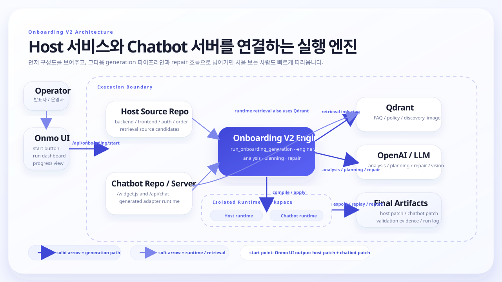

Why This View Works
구성부터 보여주고 stage는 다음 장에서
처음 보는 사람은 `analysis`보다 “어떤 서버와 저장소가 연결되는가”를 먼저 봐야 전체 시스템을 빠르게 이해합니다.
온보딩 V2를 “여러 코드베이스와 서버를 엮어 최종 patch와 retrieval runtime을 만드는 엔진”으로 먼저 보여주고, 그다음 stage 흐름으로 넘어가면 이해가 빠릅니다.

Why This View Works
처음 보는 사람은 `analysis`보다 “어떤 서버와 저장소가 연결되는가”를 먼저 봐야 전체 시스템을 빠르게 이해합니다.
Must Mention
이 세 인터페이스와 `host patch + chatbot patch` 산출물을 짚어주면 시스템의 시작점, 운영점, 결과물이 한 번에 정리됩니다.